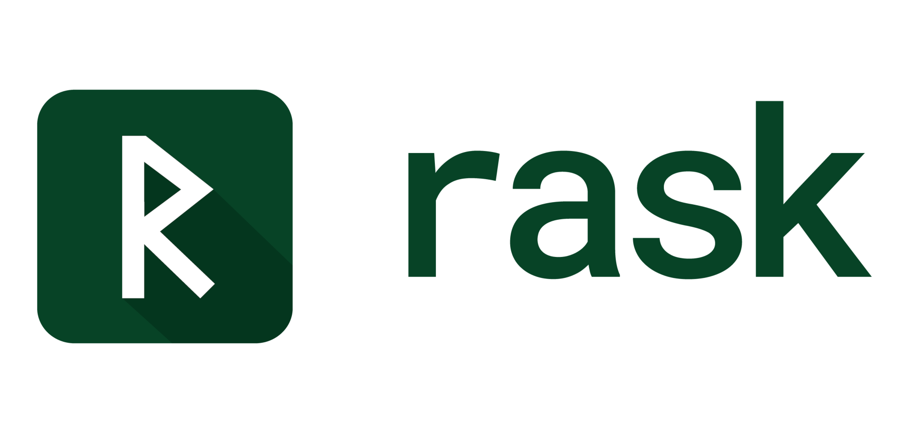
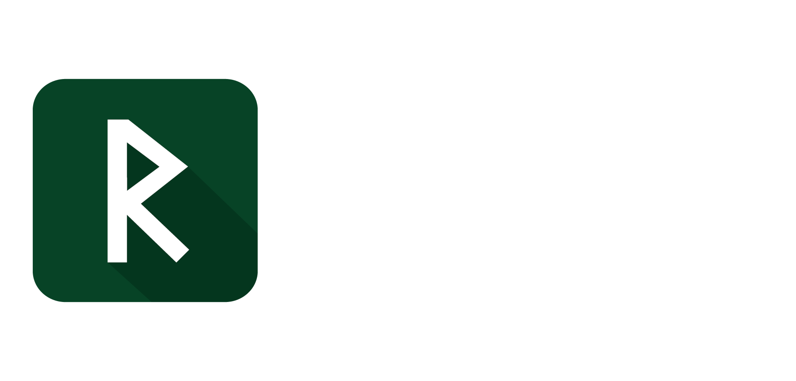

What Rask is
A systems language built around one bet: if references can’t be stored, lifetime annotations stop being necessary.
Borrow a value for a call or an expression and it works the way you’d expect. Put the borrow in a struct field, or return it, and there’s no syntax for what you’re asking — which is the point. Nothing outlives the thing it points at, so there’s nothing to track, and signatures carry types and nothing else.
Somewhere between Rust and Go. Closer to Rust on safety, closer to Go on ceremony.
import fs
import io
func grep(path: string, pat: string) -> void or io.IoError {
mut file = try fs.open(path)
ensure file.close()
let text = try file.read_text()
for line in text.lines() {
if line.contains(pat) { println(line) }
}
}
Three rules meet in those eight lines. fs.open hands back a linear resource
the compiler makes you consume exactly once. ensure defers that consumption
to the end of the scope. try returns early on failure — and because the
consumption is already scheduled, leaving early still closes the file. No
defer discipline to remember, no destructor running out of sight.
Where to start
Rask is pre-0.1 and a solo project. Expect gaps in these chapters and bugs in the compiler; the issue tracker is the honest picture.
New here. Install it, write your first program, then read the chapters under Learn the language. They take one concept at a time and say why each rule is the way it is, which is the part the specs leave out. There are also exercises in the repo. Nothing to install to look around: the playground runs Rask in the browser.
Already writing Rask. The language card is the whole language on one page for looking a rule up. The example programs are complete and CI-checked. The specs are the normative wording when the other two disagree.
Here for the design. The writing is the long-form argument; CORE_DESIGN.md is the principles it falls out of, and RULINGS.md is how open questions get settled.
Installation
Note: Rask is in early development (pre-0.1). Expect breaking changes.
Prerequisites
- Rust toolchain (for building from source)
- Git
- A C compiler (cc) — the runtime is compiled from C
Building from Source
git clone https://github.com/rask-lang/rask.git
cd rask/compiler
cargo build --release
The rask binary will be in compiler/target/release/rask.
Verify Installation
./target/release/rask --version
CLI Commands
| Command | What it does |
|---|---|
rask run <file> | Compile and execute a .rk program |
rask check <file> | Type-check without running |
rask fmt <file> | Format source code |
rask lint <file> | Check style and idioms |
Compiled binaries are written to build/debug/.
Running Examples
The repository includes working examples:
./target/release/rask run ../examples/hello_world.rk
Next Steps
- Your First Program
- Passing Values, the first guide chapter
Your First Program
Create a file called hello.rk:
func main() {
println("Hello, Rask!")
}
Run it:
rask run hello.rk
Output:
Hello, Rask!
What’s Happening?
func main()is the program entry pointprintln()is a builtin for printing with newline
Variables
Let’s try variables:
func main() {
let name = "Rask"
mut year = 2026
year += 1
println(format("Hello from {} in {}!", name, year))
}
letbinds a name once: no reassignment, and no mutating the value either (you can still move it — handing ownership away isn’t mutation)mutis what you reach for when the value needs to change — reassignment or a mutating method likev.push(x)- Types are inferred, but you can write them explicitly:
let year: i64 = 2026
const exists too, but it’s only for module-level constants — not for locals inside a function.
Functions
func greet(name: string) {
println(format("Hello, {}!", name))
}
func main() {
greet("World")
}
Functions that return values need explicit return:
func add(a: i32, b: i32) -> i32 {
return a + b
}
func main() {
let result = add(2, 3)
println(format("2 + 3 = {}", result))
}
Next: Explore the Guide
Next: Passing Values, on what happens to a value when you hand it to a function.
Try it in the browser
The playground runs Rask without installing anything. It’s the interpreter compiled to WebAssembly, so the code runs in your browser rather than on a server.
Write code on the left, Ctrl+Enter to run, output on the right. Run tests
runs the file’s test blocks instead of main. The examples dropdown loads the
programs from
examples/, and Copy
link gives you a URL with your code in it.
What it can’t do
A browser has no files, no sockets, no clock and no threads, so anything needing one of those is refused with a message rather than half-working:
fs, io, net, http | no filesystem or sockets |
time | no clock — which is also why benchmark blocks don’t run here |
spawn, Thread.spawn, using Multitasking, using ThreadPool | no threads |
extern "C", import c | no libc to call |
Everything else runs: collections, structs, enums, generics, traits, pattern
matching, closures, error handling, comptime. Recursion is capped a few
hundred frames deep, because the browser puts a much lower ceiling on call
depth than an OS thread does.
The dropdown only lists examples that actually run here. The rest are in examples/; to run those, install Rask and run the file directly.
Source
Passing Values
Every parameter answers one question: does the caller still have this afterwards? There are three answers, and the code says which one at both ends.
Borrow: the default
// No marker: the callee reads, the caller keeps the value.
func describe(account: Account) -> string {
return "{account.owner}: {account.balance}"
}
No marker, no ceremony. The callee reads; the caller keeps the value and carries on using it. This is most parameters in most programs, which is why it’s the default.
A borrow isn’t yours to give away. Try to pass it on to something that takes ownership and the compiler stops you:
error[E0835]: cannot give away `account` — it's borrowed, not owned
--> docs/book/errors/passing-values/consume_borrowed.rk:15:22
|
14 | func describe(account: Account) -> i64 {
| ------- `account` is declared as a borrowed parameter
15 | return close_out(account)
| ^^^^^^^ `close_out` takes ownership, and `account` isn't yours to give
= fix: take it: `take account: …` in the signature — then the caller can see it goes
= why: the caller keeps a parameter it didn't mark `take` and goes on using it, so consuming it here would leave them holding something that's gone. For a `@resource` that's a second close of a real handle. [mem.parameters/PM1, mem.linear/L1]
The caller never marked this as given, so they’re still using it. Consuming it here would leave them holding something that’s gone. For a file handle or a transaction, that’s a second close of a real resource.
Mutate: write through, caller keeps it
// `mutate`: the callee writes through, the caller still owns it afterwards.
func deposit(mutate account: Account, amount: i64) {
account.balance += amount
}
The call site marks it too, and that’s not optional:
deposit(mutate account, 50) // mutate: marker required
Leave the marker off and you get the one-token fix, plus the reason:
error[E0373]: `deposit` mutates `account` — mark it at the call site
--> docs/book/errors/passing-values/missing_marker.rk:16:13
|
16 | deposit(account, 50)
| ^^^^^^^ passed to the `mutate account` parameter
= fix: deposit(mutate account, …)
= why: the compiler backstops a misread *move* — using a value after it's moved is an error — but nothing backstops a misread mutation: both readings are legal code, so the one that can't be caught gets written down. The marker follows the signature, not the argument's size, so a Copy argument writes it too. A method receiver is exempt — `player.take_damage(10)` operates on the receiver by construction [mem.parameters/PM4, PM5]
Here’s the thinking behind that. If you misread a move, the compiler catches it for you: use the value again and you get an error naming where it went. If you misread a mutation, nothing catches it. Both readings are legal code, and the value looks the same afterwards, just different. So the case nobody can catch for you is the one you write down.
Because the rule is syntactic it has no exceptions to memorise: the marker is required exactly when
the parameter says mutate, whatever the argument’s type or size. An i64 writes it too.
One thing catches everyone once. let is deep:
error[E0302]: cannot mutate `account` — declared `let`
--> docs/book/errors/passing-values/let_as_mutate.rk:16:20
|
16 | deposit(mutate account, 50)
| ^^^^^^^ `account` is a let binding — immutable
= fix: replace `let account` with `mut account`
= why: `let` bindings forbid rebinding and mutation. Use `mut` when you need to modify the value or call mutating methods.
let doesn’t mean “this name won’t be reassigned.” It means nothing changes through this name,
including through a mutating method, an index, or a field assignment.
Take: the callee keeps it
// `take`: the callee keeps it. The name dies at the call site.
func close_out(take account: Account) -> i64 {
return account.balance
}
No marker needed, though own account is available when you want the call site to shout. After the
call the name is gone:
error[E0800]: use of moved value: `account`
--> docs/book/errors/passing-values/use_after_take.rk:17:19
|
16 | let n = close_out(account)
| ------- value moved here
17 | println("{n} {account.balance}")
| ^^^^^^^ value used here after move
= note: `Account` is 24 bytes (copy threshold is 16) — assignment moves instead of copying
= help: add `account.clone()` if you need an independent copy
That note is the whole reason take needs no marker: the compiler will tell you exactly where the
value went, the moment you reach for it again.
Receivers are never marked
extend Account {
// A receiver is never marked at the call site, mutating or not.
func charge_fee(mutate self, fee: i64) {
self.balance -= fee
}
}
account.charge_fee(5) // receiver: never marked
charge_fee takes mutate self and the call site still says nothing. The receiver is the thing
being operated on, which is what the dot means. Marking it would put noise on every mutating method
in the language.
Putting it together
mut account = Account { owner: "Ada", balance: 100 }
println(describe(account)) // borrow: no marker
deposit(mutate account, 50) // mutate: marker required
account.charge_fee(5) // receiver: never marked
println(describe(account))
let final = close_out(account) // take: account is gone after this
println("closed with {final}")
Read the markers and you know the shape of that block without opening a single signature: two borrows, one mutation, one method on the receiver, one hand-off. That’s what making them visible buys. Running it prints:
Ada: 100
Ada: 145
closed with 145
doubled to 10, and fee is still 5
Small values are copied, not given
func charge_twice(take amount: i64) -> i64 {
return amount * 2
}
// Small values (16 bytes or less, all-Copy fields) copy instead of moving,
// so handing one to `take` leaves the caller's copy alone.
let fee = 5
let doubled = charge_twice(fee)
println("doubled to {doubled}, and fee is still {fee}")
take means “I’m keeping this”, but you can’t take away what the caller never gave up. Values of
16 bytes or less whose fields are all Copy get copied on the way in, so fee is untouched. Past 16
bytes it’s a real move and the name dies, which is what the Account error above shows, sizes and
all.
The threshold is fixed at 16 bytes and isn’t configurable. Moving it would change what existing programs mean, so it’s a semantic boundary rather than a tuning knob.
Rules behind this page
- Parameter modes: the normative version
- Value semantics: the copy threshold
- Linearity: why a borrow can’t be consumed
Examples
Complete programs, not fragments. Each one lives in
examples/ with a recorded output in
tests/golden/, which enrolls it in the example gate: every CI run compiles it on both
backends and diffs what it prints. A program listed here works, or the build is red.
| Program | What it exercises |
|---|---|
| grep_clone.rk | CLI flags, file reads, catch on the error branch, string scanning |
| file_copy.rk | Error enums with message(), optionals, own at a call site |
| game_loop.rk | Frame update, traits, worker threads. Read it for the loop, not the storage (see below) |
| text_editor.rk | Undo stack, ensure cleanup, linear resources. Same storage caveat |
| parameter_modes.rk | Borrow, mutate, take. The subject of Passing Values |
Run one:
rask run examples/grep_clone.rk -- -n pattern file.txt
Two of these store their entities in a Pool with Handles, which racks and links have
replaced. That’s sequencing rather than neglect: migrating the examples is step 5 of
#908, and it waits on an answer for
serialization: a handle is an integer that survives a round trip, and a link is an address,
so there’s no link analogue yet. Copy the loop and the undo stack from these; take the
storage pattern from racks.md.
There were walkthrough chapters here. They quoted code by hand, were checked only for
parsing, and drifted: the game-loop page taught Pool<T>, which the design replaced with
racks and links. Guide chapters now pull their code out of these programs
(how this book is built),
so a walkthrough can’t say something the program doesn’t do.
Formal Specifications
The formal language specifications are maintained in the repository’s specs/ directory. These are detailed technical documents for language implementers and those who want deep understanding.
Organization
Specs are organized by topic:
- Types - Type system, generics, traits
- Memory - Ownership, borrowing, resources
- Control - Loops, match, comptime
- Concurrency - Tasks, threads, channels
- Structure - Modules, packages, builds
- Stdlib - Standard library APIs
Quick Access
Key specifications:
| Topic | Link |
|---|---|
| Ownership | ownership.md |
| Borrowing | borrowing.md |
| Collections | collections.md |
| Pools | pools.md |
| Error Types | error-types.md |
| Concurrency | async.md |
For Users vs Implementers
- This Book - User-facing documentation (“How do I use Rask?”)
- Specs - Formal specifications (“How does Rask work internally?”)
Most Rask users won’t need the specs. If you’re:
- Building applications → This book is for you
- Building compilers/tools → Read the specs
- Curious about internals → Specs provide complete detail
See Also
- CORE_DESIGN.md - Design philosophy and rationale
- METRICS.md - How the design is validated
Contributing
Rask is in active design and development. Contributions welcome!
How to Help
- Try it out - Run examples, report bugs
- Review specs - Provide feedback on language design
- Implement features - Check TODO.md for open tasks
- Documentation - Improve this book
Getting Started
- Read the Design Process to understand Rask’s philosophy
- Check out the formal specifications
- Explore the CORE_DESIGN.md document
- Look at TODO.md for what needs work
Repository
Ways to Contribute
Bug Reports
Found a bug? Open an issue.
Include:
- Code that demonstrates the bug
- Expected behavior
- Actual behavior
- Compiler output
Feature Suggestions
Have an idea? Open an issue for discussion.
Consider:
- Does it align with core principles?
- What’s the tradeoff?
- How does it affect the litmus tests?
Code Contributions
- Fork the repository
- Create a feature branch
- Make your changes
- Run tests:
cd compiler && cargo test - Submit a pull request
Documentation
Improvements to this book are welcome:
- Fix typos and clarity issues
- Add examples
- Improve explanations
- Expand placeholder sections
Community Guidelines
- Be respectful and constructive
- Focus on technical merit
- Consider tradeoffs and design constraints
- Test your changes
Questions?
Open a discussion or issue on GitHub.
Design Process
Rask’s design is guided by clear principles and measured against specific metrics.
Design Principles
- Safety Without Annotation - Memory safety without lifetime markers
- Value Semantics - No hidden sharing or aliasing
- No Storable References - References can’t escape scope
- Transparent Costs - Major costs visible in code
- Local Analysis Only - No whole-program inference
- Resource Types - I/O handles must be consumed
- Compiler Knowledge is Visible - IDE shows inferred information
Full details: CORE_DESIGN.md
Validation
Rask is validated against test programs that must work naturally:
- HTTP JSON API server ✓ (passes type-checking)
- grep clone ✓ (implemented)
- Text editor with undo ✓ (implemented)
- Game loop with entities ✓ (implemented)
- Embedded sensor processor ✓ (passes type-checking)
Litmus test: If Rask is longer/noisier than Go for core loops, fix the design.
Metrics
Design decisions are evaluated using concrete metrics:
- Clone overhead (% of lines with .clone())
- Handle access cost (nanoseconds)
- Compile times (seconds per 1000 LOC)
- Binary size
- Memory usage
See METRICS.md for the scoring methodology.
Specs and RFCs
Language features are documented as formal specifications in specs/.
Major changes follow an RFC process:
- Open an issue for discussion
- Draft a specification
- Implement in compiler
- Validate against litmus tests
- Update metrics
- Merge if it improves the design
Tradeoffs
Every design has tradeoffs. Rask makes these intentional choices:
- More
.clone()calls - Better than lifetime annotations (our view) - Handle overhead - Better than raw pointers with manual tracking
- No storable references - Simpler mental model, requires restructuring some patterns
- Explicit costs - Better than hidden complexity
See CORE_DESIGN.md § Tradeoffs for full discussion.
Contributing to Design
When proposing changes:
- Explain the problem - What use case is difficult today?
- Show the tradeoff - What does this cost?
- Test against litmus tests - Does it make real programs better or worse?
- Measure the impact - Update relevant metrics
- Consider alternatives - What other approaches exist?
The goal is ergonomics without hidden costs. If a feature hides complexity or breaks transparency, it probably doesn’t belong.
Philosophy
“Safety is a property, not an experience.”
Users shouldn’t think about memory safety—they should just write code. The type system and scope rules make unsafe operations impossible by construction.
“If Rask needs 3+ lines where Go needs 1, question the design.”
Ceremony should be minimal. Explicit costs are good; boilerplate is bad.
“Local analysis only.”
Compilation should scale linearly. No whole-program inference, no escape analysis. Function signatures tell the whole story.
Learn More
- CORE_DESIGN.md - Complete design rationale
- METRICS.md - How we measure success
- TODO.md - What’s being worked on
- Formal Specifications - Detailed technical specs
How this book is built
Rules for anyone adding a page. They exist because a book is a second copy of the language, and the usual fate of a second copy is to drift until it teaches a version of the language nobody ships.
What a page may contain
Prose, and code that something else already verifies. Nothing else.
| You want to show | Write it as |
|---|---|
| A few lines from a real program | {{#include ../path/prog.rk:anchor}} |
| A small self-contained snippet | an inline block with <!-- test: compile --> or <!-- test: run | expected output --> |
| What the compiler says when you get it wrong | {{#include ../../errors/<chapter>/<case>.out}} |
| What a program prints | {{#include ../../../../tests/golden/<name>.out}} |
<!-- test: parse --> does not count as verified anywhere in the book. Parsing proves the
syntax is current; syntax is not what rots. The front-page snippet passed test: parse
while calling fs.open, which the real grep program doesn’t use, and missing both its
imports, so a reader copying it got two errors on page one. compile type-checks;
run | expected runs it and matches the output. Use one of those.
CI runs the markers in its “Docs snippets parse” step, which has covered docs/ for a
while. What it can’t tell you is whether a block has a marker at all, or whether the one
it has is strong enough, which is what tests/book_gate.sh is for. It also checks that every include resolves: the file is
present and the named anchor really is in it, because mdBook renders a missing anchor as
nothing at all and says so quietly.
Errors are content
Chapters teach with real compiler output. Each case is a program under
docs/book/errors/<chapter>/ that must not compile, with its rask check output
pinned beside it. The gate re-renders and diffs on every run, so improving a diagnostic
shows up as a diff on the page that teaches it, which is the review you want. A case
that starts compiling is a hard failure, not a stale golden: the page is claiming a
rejection the compiler no longer makes.
Regenerate after a deliberate diagnostics change:
tests/book_gate.sh --update
The book teaches the ruling, not just the rule
The specs are normative and say what the rule is. A chapter’s job is the part the spec tables leave out: why it’s that way, and what it would cost to be otherwise. “The marker is required” is a spec line. “A misread move is caught for you and a misread mutation isn’t, so the one that can’t be caught is the one you write down” is a chapter.
specs/RULINGS.md is where those arguments come from. If a chapter can’t say why, it’s restating the spec and should link to it instead.
Size is capped by the language, not by the author
specs/DAY_ONE.md holds the reading set: the concepts you need to read someone else’s Rask, which must fit one page. The guide inherits that budget: roughly one chapter per Day-One concept, and no chapter for something that isn’t in the language yet.
This is the answer to books that grow to a thousand pages: the guide can’t outgrow the
language, because its table of contents is the language’s own list. Anything deeper goes
to specs/, which is allowed to be long.
What to do when the language changes
Nothing, usually. That’s the point: included code moves with its program, error renderings are regenerated by the gate, program output comes from the goldens. The prose only needs touching when a decision changes, which is rare and deliberate.
If you find yourself keeping a page in step by hand, the page is built wrong.